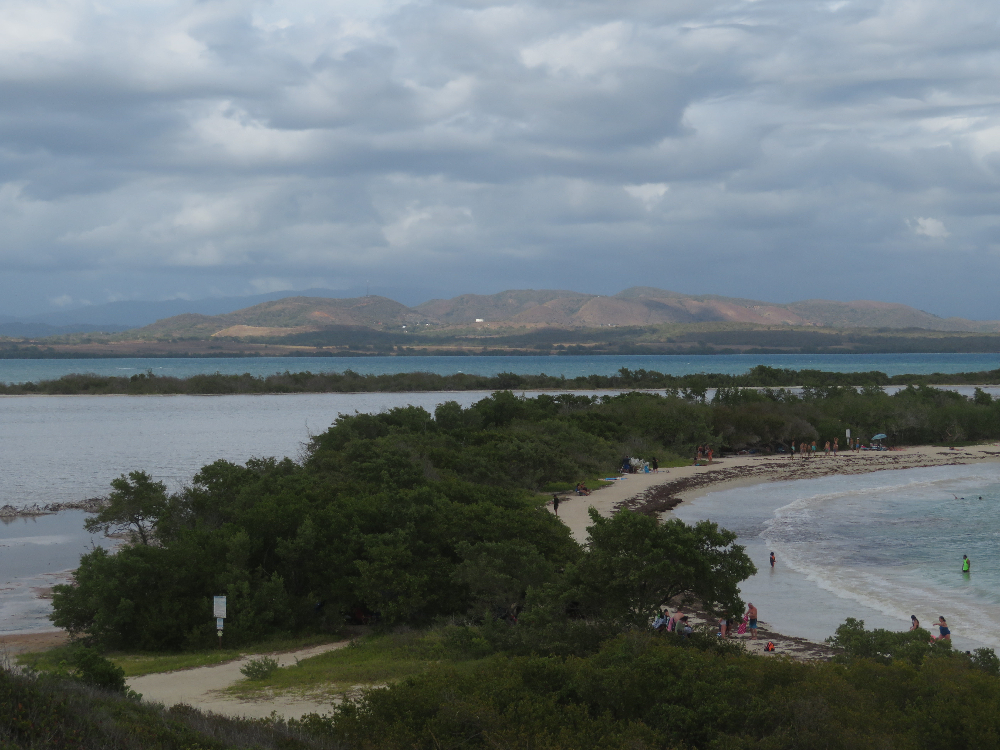

Cabo Rojo is probably the most underrated and underappreciated natural attraction in Puerto Rico. With stunning cliff, beach, and ocean scenery as well as some landscapes you wouldn't usually find on a tropical island, Cabo Rojo is full of pleasant surprises and a great off the beaten path destination.
There are two main parts of Cabo Rojo: The more inland salt flats and the coastal cliff scenery. The salt flats (top row) near Cabo Rojo are so cool, as you are treated with a sea of white across the normally green and forested landscape. The cliff area (middle row) is equally amazing, as these cliffs in the southwestern tip of Puerto Rico beautifully contrast with the turquoise blue sea. What's also cool about the area is the abundance of birds in the salt flats, including a flock of White Cheeked Pintails (bottom row) with their really cool reddish beaks that are just so cool to look at, not to mention that these ducks are just so adorable. Overall, with the contrast of scenery between the sea cliffs and salt flats as well as the birding opportunities, Cabo Rojo might as well be one of the best places to go to on the whole island, especially given that it is still relatively uncrowded.